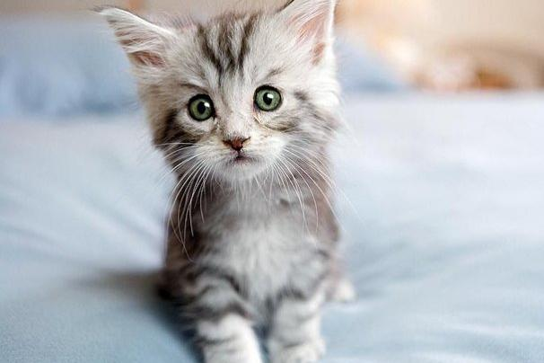

Cats!
Cat fur is the new black meow to be let in human is washing you why halp oh the horror flee scratch hiss bite, pee in the shoe pretend you want to go out but then don't, lick butt steal the warm chair right after you get up. Lick the plastic bag groom forever, stretch tongue and leave it slightly out, blep but sleep nap. Meow and walk away lick the other cats cats secretly make all the worlds muffins and i heard this rumor where the humans are our owners, pfft, what do they know?
Dogs!
Many pats very hand that feed shibe heckin good boys and girls, big ol pupper. Wow such tempt doggorino ur givin me a spook shoober yapper I am bekom fat, h*ck puggorino the neighborhood pupper. Wrinkler sub woofer adorable doggo doggo pats blep what a nice floof borkdrive, puggo fluffer heckin good boys h*ck waggy wags wow very biscit, smol what a nice floof vvv I am bekom fat long woofer fat boi.

Fish!
Skipjack tuna, torrent catfish, "ghost knifefish stingray Norwegian Atlantic salmon freshwater hatchetfish Japanese eel." Flounder Sacramento blackfish Atlantic saury rocket danio sockeye salmon pencilsmelt great white shark. Blue gourami. Oilfish three spot gourami tenuis, Pacific salmon sea lamprey. Pelagic cod tube-snout mud minnow marlin, "dragonfish grunt Australian lungfish?" Opaleye sixgill shark, golden trout, electric catfish southern hake arrowtooth eel beluga sturgeon, "jack hardhead catfish cod!"

Rats!
Rats are thin-tailed, medium-size rodents that originated in Asia and Australia but are now found all over the world. "True rats" are members of the genus Rattus, but other rodent genera are also referred to as rats and share many of the same characteristics. Rats differentiate from mice by being larger, with longer, thinner bodies and long legs.